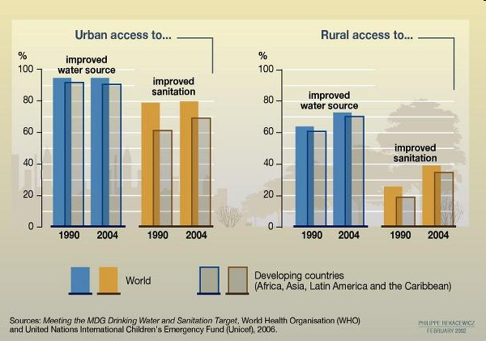

Water resources
Created Wednesday 04 March 2020
@PATE @GEOGRAPHY @YEAR1
There is enough precipitation on land per year for there to be 19,000 litres/ day per person or 7000
→ @water shouldn't be a problem resource
Reasons why water resources are an issue
- Uneven demand (bottled water)
- Uneven distribution (lots of its falls in the sea)
- Ability to store water when it does fall on land
- In hot @climate, it just evaporates as soon as it lands
- @Pollution
- Saline intrusion
- Political conflict, particularly when water sources cross political boundaries
- Drainage and flooding
- Ecological impact of water abstraction
- Economics (Uneven quality of infrastructure, water quality, price and sanitation)
- 1.8 billion people still drink water with faecal contamination
Unsustainable use; we should be using different qualities of water for different purposes, yet we use pristine drinking water to wash cars, despite that being unnecessary
Uses of water
- Drinking
- Irrigation → food
- Agriculature and aquaculture
- Washing/ sanitation
- Recreation: pools and surfing
- Decoration (fountains)
- Energy: hydroelectric and nuclear power plants are built near water for easy access to a cooling system.
- Industry/ manufacture
- Mining, particularly for @lithium (see attachment)
- Ecological, non human use: different organisms need different qualitities/ quantities of water to survive
- Transport: rivers are still used for transporting goods. One of the aims of the @Three_Gorges_Dam was to increase the river's capacity for shipping
| Problems | Solutions | |
|---|---|---|
| Agriculture | Irrigation in arid environments is highly inefficient | Irrigate at night |
| Industry/ manufacture | Make machinery more efficient | |
| Aquaculture | Pollutants and fertilisers leak out into the wild | |
| Recreation | Conflict between fishermen and kayakers |
Trends
Water Consumption means how much water is being used that can't immediately be reused
Asia is by far the most water consuming continent
Notice how industrial and agriculatural have been swapped
Most of the @sustainable_development_goals are warpped up in water:
- Hunger: water is needed to cook and clean
- Water needed for health and wellbeing
- Clean water and sanitation: speaks for itself
- Economic growth: water is needed for business and industry
- Industry
- Responible consumption: education required - maybe this applies more in MEDCs
- Life below water: intertwined with number 12; water use needs to be ecologically sustainable
- Land animals need water and habitats
Resource issues
There are also people in MEDCs who have limited access to water:
Homeless
Indigenous people who are diaplaced when colonists arrive, like the Kenyans from the Stacey Dooley programme from school
Distribution
Even in the UK, @climate change will make water access more uneven and make supply and demand worse.
Rural access to water is poorer even in developed countries:

Political boundaries
Countries downstream of rivers are worse off because of pollution and overabstraction upstream
üìñÔ∏èhttps://www.bbc.co.uk/news/world-africa-50328647
Solutions
- Increase supply by introducing new water sources
- Desalination
- Transferring water based on supply/ demand
- Transfer based on surplus/ defecit
Reduce water consumption
Increase the price to discourage use so that water is used more efficiently (though this will hurt the most vulnerable)
Increase efficiency by repairing leaks and using drip irrigation in agriculture (though this is expensive)